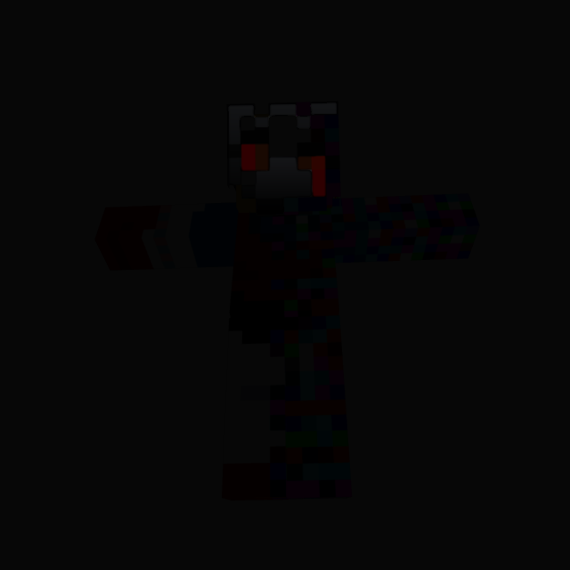
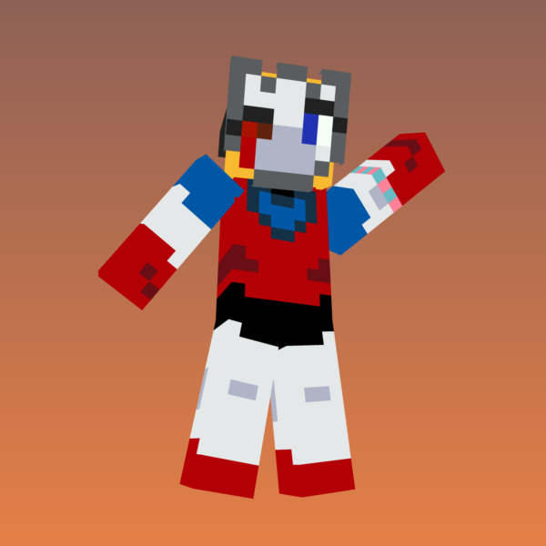
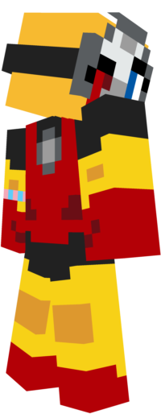
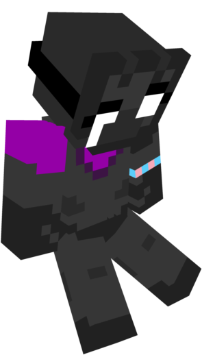
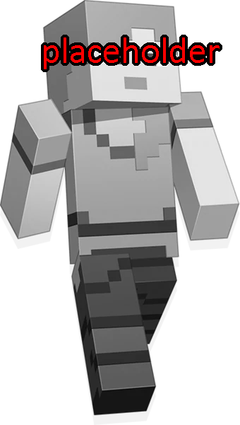
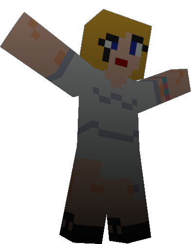
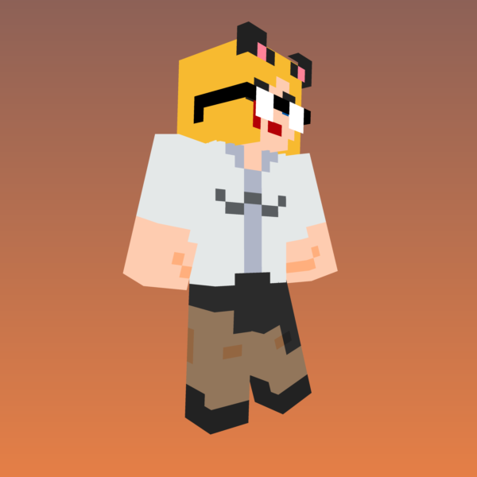
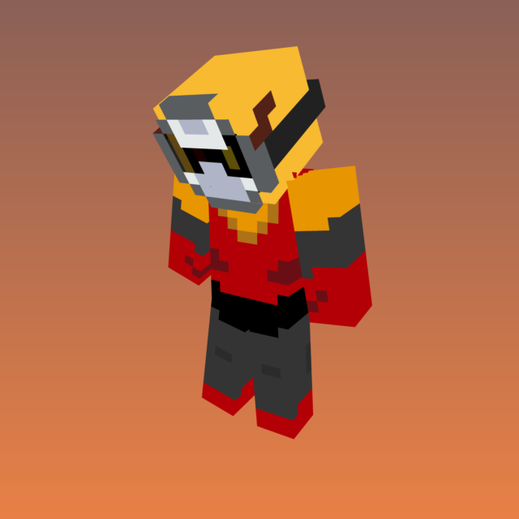
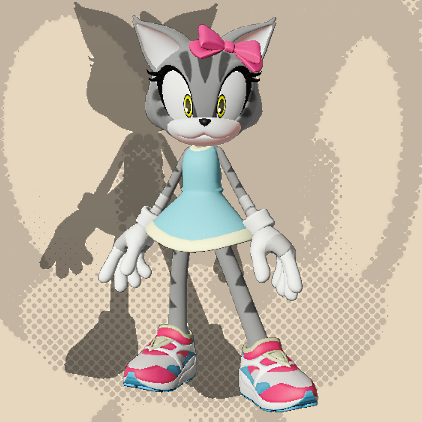

<html prefix="og: http://ogp.me/ns#">
<head>

<title>The Josefina System</title>
<meta name="title" content="Who we are...">
<meta name="description" content="We are Josie, and we are a plural system of 10 alters.">

<meta property="og:type" content="website">
<meta property="og:url" content="http://qsksw.github.io/about/">
<meta property="og:title" content="About Us">
<meta property="og:description" content="We are Josie, and we are a plural system of 10 alters.">
<meta property="og:image" content="http://qsksw.github.io/about/thumbnail.png">

<meta property="twitter:card" content="summary_large_image">
<meta property="twitter:url" content="http://qsksw.github.io/about/">
<meta property="twitter:title" content="About Us">
<meta property="twitter:description" content="We are Josie, and we are a plural system of 10 alters.">
<meta property="twitter:image" content="http://qsksw.github.io/about/thumbnail_large.png">

<link href="../favicon.ico" rel="shortcut icon" type="image/x-icon" />
<link rel="stylesheet" href="../stylesheet.css" type="text/css"/>

</head>
</html>

<div style="padding-bottom:10px;display:none;"></div>

We are Josie, the Cat Goddess of Pizza and Whores.<br><br>
Josefina Breit <i>(Pronounced "Bright")</i> Vineyard <i>(Pronounced "Vinyerd")</i><br>

Birthdate 1992-12-13<br>

White, American, AMAB, Transfem, Disabled, Cancer Survivor(s)<br><br>

Collective Pronouns: They/Them/Cats <i>(Plural)</i><br><br>

Our mind is a swirling void of person, infinite and nothing.<br>
At this time we appear to be able to shape ourselves into <span style="color:FFFF00;">10</span> alters<br><br>
This is they:<br>

<span id="Aggressive"><span id="Aggy"><span id="Agatha"></span></span></span><br><hr>

<div style="float:left;padding:25px"></div><h1>

Aggressiveness<br><span style="font-size:16px;font-weight: normal;"><br>
Josefina "Agatha" Vineyard<br>
Presumed Birthdate: 2009-06-19<br>
Female<br>
She/Her<br>
Pansexual</span></h1>

One born of a need to face difficult tasks. Had been our primary front for years and years. Suffers from anxiety. Hates to be out. She is so tired. So tired. We value her strength. She keeps us safe. Is typically our front when out in public. Can be identified by either frequent ranting and swearing, or by depressed apathy.<br>

<span id="Cheerfulness"><span id="Cheers"></span></span><br><hr>

<div style="float:right;padding:25px"></div><h1>

Cheerfulness<br><span style="font-size:16px;font-weight: normal;"><br>
Josefina "Cheers" Vineyard<br>
Presumed Birthyear: 2009<br>
Female<br>
She/Her<br>
Pansexual</span></h1>

One born of a need to reclaim what once was lost. Previously only came out while interacting with our friends. Bouncy, energetic, and fun-loving. Doesn’t often overthink actions. We value her spirit. Can be identified by an upbeat tone and informal vocabulary.<br>

<span id="Creativity"></span><br><hr>

<div style="float:left;padding:25px"></div><h1>

"Creativity"<br><span style="font-size:16px;font-weight: normal;"><br>
Presumed Birthyear: 1995<br>
Female<br>
She/Her<br>
Asexual</span></h1>

One formerly lost, who represents our “Inner Child,” as it were. Presents herself as a shy and easily-scared child. When we were her, we had ambition. It was thought we could do anything, and would. She cracked under the pressure and retreated into the darkness. She may never be able to claim her full potential. We are just happy to have her return to us. Behaves similarly enough to Cheerfulness that even we have difficulty differentiating ourselves.<br>

<span id="Voiceless"><span id="Despair"><span id="Zero"></span></span></span><br><hr>

<div style="float:right;padding:25px"></div><h1>

Despair<br id=Despair><span style="font-size:16px;font-weight: normal;"><br>
Josefina "Zero" Vineyard<br>
Presumed Birthdate: 1992-12-13<br>
Agender<br>
They/Them, He/Him<br>
Autosexual</span></h1>

One born of emotional emptiness. For a time, we simply called them "The Voiceless". Has difficulty forming coherent thoughts, so communicates to us in our head in simple phrases. Sometimes sings aloud to ourselves, very sad sounding songs composed of nonsense lyrics made up of incoherently strung together words for hopelessness and isolation. Appears to only be capable of influencing slight movements in our body without straining themselves. Perhaps this is what remains of our original self, damaged beyond repair from our brain tumor at the age of 3, the earliest trauma in our existence. We may never know for sure. We do our best to comfort them. We consider them just as valid a part of ourselves as the rest of us, and we love them.<br>

<span id="Royal"><span id="Pride"></span></span><br><hr>

<div style="float:left;padding:25px"></div><h1>

Pride<br><span style="font-size:16px;font-weight: normal;"><br>
Josefina "Royal" Vineyard<br>
Presumed Birthdate: 2020-09-19<br>
Female<br>
They/Them, She/Her<br>
Pansexual</span></h1>

One of two born specifically in response to our awakening of self. Whereas previously we always hated ourselves, this one loves ourselves, and encourages the rest of ourselves to as well. Often comes out while other alters are fronting if we find ourselves requiring positive affirmation. Frequently engages in conversation with ourselves and can be very calming, but can be more than a bit campy when interacting with others outside of ourselves. Is fascinated with our own state of being, and encourages all of ourselves to individualize as much as we feel comfortable. Can be identified by overly-elegant speech, flamboyant behaviour. Tends to say "Yes yes" as a verbal tic.<br>

<span id="Goddess"></span><br><hr>

<div style="float:right;padding:25px"></div><h1>

"Goddess"<br><span style="font-size:16px;font-weight: normal;"><br>
Has a name, but declines to share it<br>
Presumed Birthdate: 2020-09-19<br>
Non-Binary<br>
They/Them<br>
Pansexual</span></h1>

One born from the feeling of wholeness brought on by our awakening of self. Where previously we were fragmented, now we are joined. When we are they, we don't hear thoughts in our own seperate voices. We act as one. They speak and act very slowly and calmly, always pausing to consider our entire thoughts. Behaves similarly to Royal but can be differentiated by slower and more focussed behaviour.<br>

<span id="Radio"><span id="Indecisiveness"><span id="Dec"></span></span></span><br><hr>

<div style="float:left;padding:15px"></div><h1>

Indecisiveness<br><span style="font-size:16px;font-weight: normal;"><br>
Josefina "Dec" Vineyard<br><i>(Pronounced as in "Decide.")</i><br>
Presumed Birthdate: 2020-10-06<br>
Non-Binary<br>
They/Them, He/Him<br>
Pansexual</span></h1>

The first of our alters whose purpose we could not easily identify. We previously tentatively referred to them as "Radio Voice." Appears to be born of a need to be decisive. We try to make decisions by determining what all of ourselves want, but sometimes a concessus cannot be reached. Typically this would mean the awnser would simply be "Yes," but sometimes the world isn't so black and white. This one is comfortable facing the difficult decisions the rest of ourselves cannot. Similar in a way to Aggressiveness, but calmer, and better suited to critical thinking. Can be identified by a brooklyn accent and informal language.<br>

<span id="REDACTED"><span id="Research"><span id="Studiousness"><span id="Rita"></span></span></span><br><hr></span>

<div style="float:right;padding:15px"></div><h1>

[REDACTED]<br><span style="font-size:16px;font-weight: normal;"><br>
Josefina "Rita" Vineyard<br>
Nonbinary<br>
They/Them, It/Its<br>
Asexual</span></h1>

"Likes reading. Sorting. Spreadsheets.<br>Speaks and behaves mechanically. Not very talkative."<br><br><br>

<span id="BIONICLES"><span id="Initiative"></span></span><br><hr>

<div style="float:left;padding:15px"></div><h1>

Initiative<br><span style="font-size:16px;font-weight: normal;"><br>
"BIONICLES von Souljaboy"<br>
Presumed Birthdate: 2018-04-20<br>
Non-Binary<br>
They/Them<br>
Pansexual</span></h1>

Originally thought to simply be a joke persona rather than an alter. Primarily comes out while operating a novelty Twitter account focused around Lego BIONICLE. Very much likes making memes.<br>

<span id="Feral"></span><br><hr>

<div style="float:right;padding:15px"></div><h1>

"Feral"<br><span style="font-size:16px;font-weight: normal;"><br>
Presumed Birthdate: 2009-08<br>
They/Them<br>
Asexual</span></h1>

Just a cat.<br><br><br><br>

<br><br><br><br><br><br><br><br><br><br><br><br><br><br><br><br><br><br><br><br><br><br><br><br><br><br><br><br><br><br><br><br><br><br><br><br><br><br><br><br><br><br><br>

[ <a href="..">Home</a> ]<br><br><br>